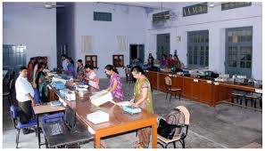
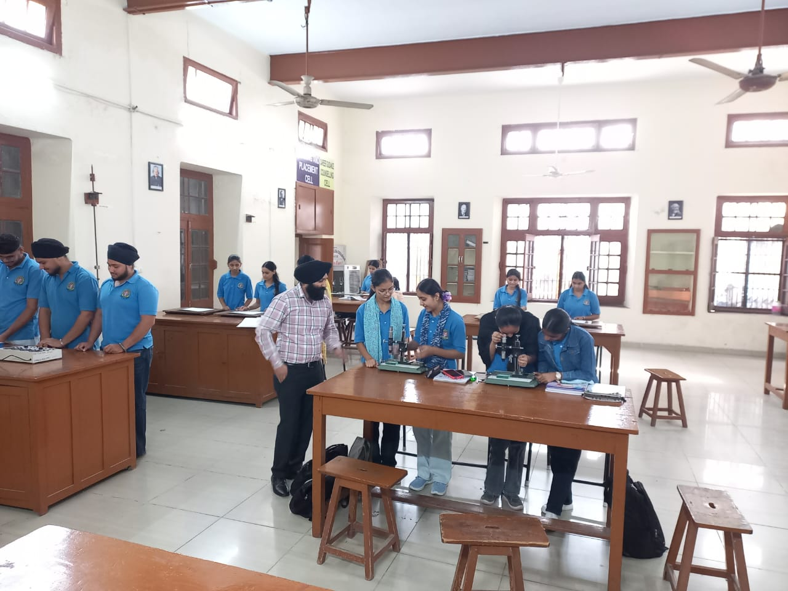

Why Choose B.Sc. at S.G.G.S. Mahilpur
Strong foundation in scientific thinking, practical laboratory exposure and pathways to research or professional careers
Practical Labs
Extensive lab hours and hands-on experiments to build applied skills.
Robust Curriculum
Current syllabus aligned with university standards and industry needs.
Experienced Faculty
Teachers with research & teaching experience across science disciplines.
Peer Learning
Group projects, seminars and inter-department collaboration.
Career Preparation
Support for internships, placements and higher-study entrance exams.
Laboratory & Library
Well-equipped labs, library resources and access to journals.
Core Subjects & Streams
Choose combinations from life sciences and physical sciences to match your career goals
Physics
Mechanics, optics, modern physics and practical labs.
Chemistry
Organic, inorganic, physical chemistry with analytical techniques.
Mathematics
Calculus, algebra, statistics and applied mathematics.
Computer Science
Programming, data structures, basics of software and practical labs.
Botany
Plant biology, physiology, ecology and lab techniques.
Zoology
Animal biology, anatomy, ecology and practical work.
Career Opportunities
Multiple career paths including industry, research and teaching
Laboratory Technician
Jobs in university and private labs
Higher Studies
M.Sc., M.Phil., PhD and professional courses
Data & Analytics
Entry-level analyst roles, research data handling
Teaching & Academics
School & college-level teaching (after B.Ed / PG)
Department Gallery
Lab sessions, field visits and campus science activities

Slot 1bsc-1.jpg
Slot 2bsc-2.jpg